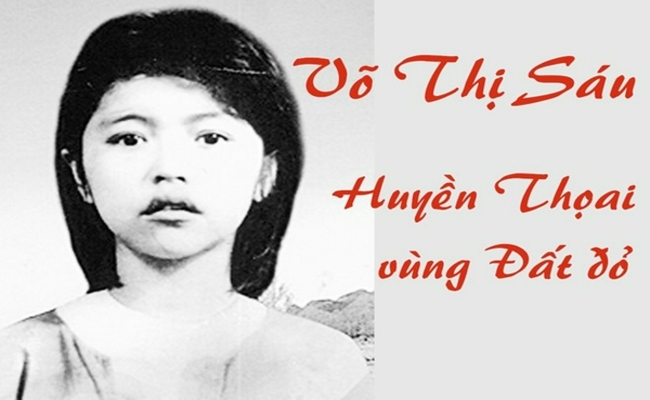
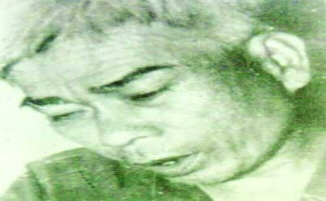
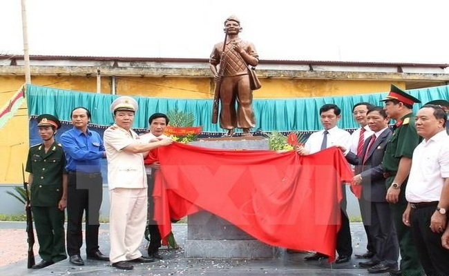
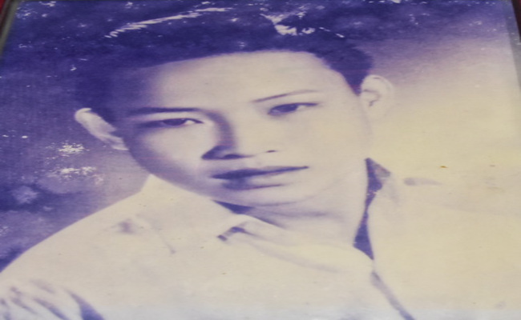
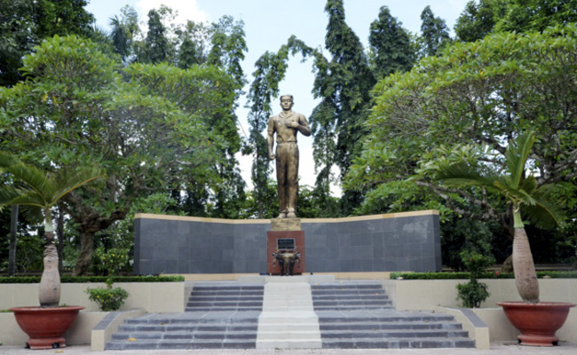
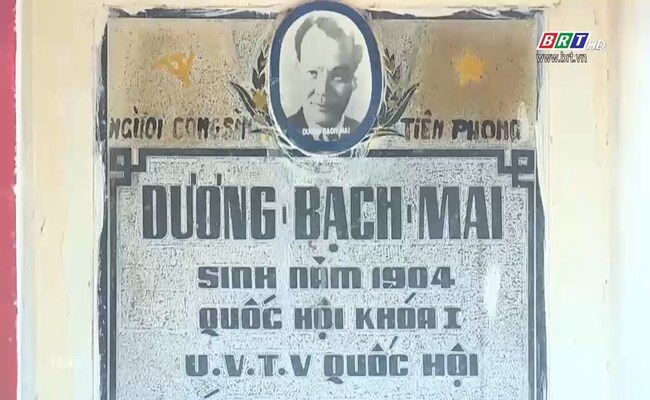

1. Võ Thị Sáu (1933-1952)
:
- Là một nữ anh hùng dân tộc Việt Nam. Bà sinh ra tại xã Phước Thọ, huyện Đất Đỏ, tỉnh Bà Rịa-Vũng Tàu.
Năm 1946, khi mới 13 tuổi, bà đã tham gia cách mạng và trở thành một du kích. Bà đã tham gia nhiều trận
đánh, tiêu diệt nhiều tên địch, góp phần giải phóng quê hương. Năm 1950, bà bị địch bắt và bị kết án tử
hình. Bà hy sinh vào ngày 23 tháng 1 năm 1952 tại nhà tù Côn Đảo.
- Võ Thị Sáu là một tấm gương sáng về tinh thần yêu nước, dũng cảm và hy sinh của người chiến sĩ cách
mạng. Bà đã trở thành một biểu tượng của cuộc đấu tranh giải phóng dân tộc Việt Nam. Tên tuổi của bà
được lưu truyền trong lòng nhân dân và là một tấm gương sáng cho thế hệ trẻ Việt Nam noi theo.

- Sau khi hy sinh, Võ Thị Sáu đã được Nhà nước Việt Nam truy tặng danh hiệu Anh hùng Lực lượng vũ trang
nhân dân. Tên tuổi của bà được đặt cho nhiều đường phố, trường học, công trình và di tích trên khắp cả
nước. Bà cũng là nhân vật chính của nhiều tác phẩm văn học, nghệ thuật.
- Võ Thị Sáu là một tấm gương sáng về tinh thần yêu nước, dũng cảm và hy sinh của người chiến sĩ
cách
mạng. Bà đã trở thành một biểu tượng của cuộc đấu tranh giải phóng dân tộc Việt Nam. Tên tuổi của bà mãi
mãi được lưu truyền trong lòng nhân dân Việt Nam và thế giới.
2. Cao Văn Ngọc (16 tháng 6 năm 1897 – 25 tháng 1 năm 1952)
- Còn được gọi là "Ông già Chuồng Cọp", là một chiến sĩ cách mạng Việt Nam. Ông sinh ra tại làng An
Ngãi,
quận Long Điền, tỉnh Bà Rịa (nay là xã An Ngãi, huyện Long Điền, tỉnh Bà Rịa – Vũng Tàu).
- Năm 1945, Cao Văn Ngọc tham gia Việt Minh và trở thành một chỉ huy của phong trào Đồng khởi ở Bà Rịa –
Vũng Tàu. Ông đã chỉ huy nhiều trận đánh, tiêu diệt nhiều tên địch, góp phần giải phóng quê hương. Năm
1949, ông bị địch bắt và bị giam tại nhà tù Côn Đảo. Tại nhà tù Côn Đảo, Cao Văn Ngọc đã bị địch tra tấn
dã man nhưng ông vẫn kiên trung với lý tưởng
cách
mạng. Ông đã viết nhiều bài thơ và câu nói nổi tiếng, trong đó có câu "Địch có thể giam giữ được thân
xác ta, nhưng không thể giam giữ được tinh thần ta".

- Cao Văn Ngọc đã hy sinh vào ngày 25 tháng 1 năm 1952 tại nhà tù Côn Đảo. Ông là một tấm gương sáng về
tinh thần yêu nước, kiên trung và bất khuất của người chiến sĩ cách mạng Việt Nam. Tên tuổi của ông mãi
mãi được lưu truyền trong lòng nhân dân Việt Nam và thế giới.
- Dưới đây là một số bài thơ nổi tiếng của Cao Văn Ngọc:
• "Địch có thể giam giữ được thân xác ta, nhưng không thể giam giữ được tinh thần ta"
• "Ta chết hôm nay, nhưng tinh thần ta sẽ sống mãi với dân tộc"
• "Ta hy sinh cho độc lập, tự do của Tổ quốc"
• "Ta là chiến sĩ cách mạng, ta sẽ chiến đấu đến cùng để bảo vệ Tổ quốc"
• "Ta là chiến sĩ kiên trung, ta sẽ không bao giờ đầu hàng kẻ thù"
- Cao Văn Ngọc là một tấm gương sáng về tinh thần yêu nước, kiên trung và bất khuất của người chiến sĩ
cách mạng Việt Nam. Tên tuổi của ông mãi mãi được lưu truyền trong lòng nhân dân Việt Nam và thế giới.
3. Dương Văn Mạnh
- Dương Văn Mạnh là một thiếu niên Việt Nam đã tham gia cách mạng và hy sinh khi mới 17 tuổi. Ông sinh
ra tại xã Long Phước, huyện Long Điền, tỉnh Bà Rịa – Vũng Tàu vào năm 1930.
- Năm 1944, khi mới 14 tuổi, Dương Văn Mạnh đã tham gia cách mạng và trở thành một liên lạc viên. Ông đã
tham gia nhiều hoạt động bí mật, như vận chuyển vũ khí, tài liệu và tiền bạc cho cách mạng.
- Năm 1947, Dương Văn Mạnh bị địch bắt và bị tra tấn dã man. Tuy nhiên, ông vẫn kiên trung với lý tưởng
cách mạng và không khai báo gì. Ông đã bị kết án tử hình và bị xử bắn vào ngày 23 tháng 1 năm 1952.
- Dương Văn Mạnh là một tấm gương sáng về tinh thần yêu nước, dũng cảm và hy sinh của tuổi trẻ Việt Nam.
Ông đã trở thành một biểu tượng của cuộc đấu tranh giải phóng dân tộc Việt Nam. Tên tuổi của ông được
lưu truyền trong lòng nhân dân và là một tấm gương sáng cho thế hệ trẻ Việt Nam noi theo.

- Sau khi hy sinh, Dương Văn Mạnh đã được Nhà nước Việt Nam truy tặng danh hiệu Anh hùng Lực lượng vũ
trang nhân dân. Tên tuổi của ông được đặt cho nhiều đường phố, trường học, công trình và di tích trên
khắp cả nước. Ông cũng là nhân vật chính của nhiều tác phẩm văn học, nghệ thuật.
- Dương Văn Mạnh là một tấm gương sáng về tinh thần yêu nước, dũng cảm và hy sinh của tuổi trẻ Việt Nam.
Ông đã trở thành một biểu tượng của cuộc đấu tranh giải phóng dân tộc Việt Nam. Tên tuổi của ông mãi mãi
được lưu truyền trong lòng nhân dân Việt Nam và thế giới.
4. Lê Thành Duy
- Lê Thành Duy là một nhà cách mạng và chính trị gia Việt Nam. Ông sinh ngày 12 tháng 12 năm 1909 tại
làng Phước Thọ, huyện Đất Đỏ, tỉnh Bà Rịa - Vũng Tàu. Ông tham gia cách mạng từ năm 1929 và từng giữ
nhiều chức vụ quan trọng trong Đảng Cộng sản Việt Nam, như Ủy viên Bộ Chính trị, Chủ tịch Quốc hội, Phó
Chủ tịch nước. Ông qua đời ngày 18 tháng 6 năm 1997 tại Hà Nội, hưởng thọ 88 tuổi.
 - Lê Thành Duy là một nhà cách mạng kiên cường, bất khuất, đã góp phần quan trọng vào sự nghiệp giải
phóng dân tộc và thống nhất đất nước. Ông là tấm gương sáng về tinh thần yêu nước, hy sinh cho Tổ quốc.
Tên tuổi của ông được lưu truyền trong lòng nhân dân Việt Nam và thế giới.
5. Nguyễn Thanh Đằng
- Nguyễn Thanh Đằng là một Anh hùng Lực lượng vũ trang nhân dân Việt Nam. Ông sinh ngày 1 tháng 1 năm
1929 tại xã Phước Thọ, huyện Đất Đỏ, tỉnh Bà Rịa-Vũng Tàu. Ông tham gia cách mạng từ năm 1945 và từng
giữ nhiều chức vụ quan trọng trong Quân đội nhân dân Việt Nam, như Đại tá, Tư lệnh Quân đoàn 7, Phó Tư
lệnh Quân khu 7. Ông qua đời ngày 23 tháng 1 năm 2018 tại Thành phố Hồ Chí Minh, hưởng thọ 89 tuổi.
- Lê Thành Duy là một nhà cách mạng kiên cường, bất khuất, đã góp phần quan trọng vào sự nghiệp giải
phóng dân tộc và thống nhất đất nước. Ông là tấm gương sáng về tinh thần yêu nước, hy sinh cho Tổ quốc.
Tên tuổi của ông được lưu truyền trong lòng nhân dân Việt Nam và thế giới.
5. Nguyễn Thanh Đằng
- Nguyễn Thanh Đằng là một Anh hùng Lực lượng vũ trang nhân dân Việt Nam. Ông sinh ngày 1 tháng 1 năm
1929 tại xã Phước Thọ, huyện Đất Đỏ, tỉnh Bà Rịa-Vũng Tàu. Ông tham gia cách mạng từ năm 1945 và từng
giữ nhiều chức vụ quan trọng trong Quân đội nhân dân Việt Nam, như Đại tá, Tư lệnh Quân đoàn 7, Phó Tư
lệnh Quân khu 7. Ông qua đời ngày 23 tháng 1 năm 2018 tại Thành phố Hồ Chí Minh, hưởng thọ 89 tuổi.
- Nguyễn Thanh Đằng là một chỉ huy quân sự tài ba, đã góp phần quan trọng vào thắng lợi của nhiều chiến
dịch trong kháng chiến chống Pháp và chống Mỹ. Ông là tấm gương sáng về tinh thần yêu nước, dũng cảm, hy
sinh cho Tổ quốc. Tên tuổi của ông được lưu truyền trong lòng nhân dân Việt Nam và thế giới.

- Sau khi hy sinh, Nguyễn Thanh Đằng đã được Nhà nước Việt Nam truy tặng danh hiệu Anh hùng Lực lượng vũ
trang nhân dân. Tên tuổi của ông được đặt cho nhiều đường phố, trường học, công trình và di tích trên
khắp cả nước. Ông cũng là nhân vật chính của nhiều tác phẩm văn học, nghệ thuật.
- Nguyễn Thanh Đằng là một tấm gương sáng về tinh thần yêu nước, dũng cảm, hy sinh cho Tổ quốc. Ông là
một chỉ huy quân sự tài ba, đã góp phần quan trọng vào thắng lợi của nhiều chiến dịch trong kháng chiến
chống Pháp và chống Mỹ. Tên tuổi của ông mãi mãi được lưu truyền trong lòng nhân dân Việt Nam và thế
giới.
6. Trần Văn Thượng
- Trần Văn Thượng là người con ưu tú của xã Long Phước, TP. Bà Rịa. Ông sinh năm 1918 trong một gia đình
giàu lòng yêu nước. Chứng kiến cảnh đàn áp dân lành của bọn thực dân và bè lũ tay sai bán nước, ông sớm
giác ngộ cách mạng. Năm 1943, ông tình nguyện tham gia hoạt động phong trào ở địa phương, dưới sự lãnh
đạo của Việt Minh.
- Ngày 9/3/1945, khi Nhật đảo chính Pháp, phong trào kháng Nhật ở Long Phước bùng nổ, ông là một trong
những thanh niên đầu tiên hăng hái tham gia tổ chức Thanh niên Tiền phong và trở thành cán bộ tuyên
truyền, vận động thanh niên cùng tham gia, vận động nhân dân bất hợp tác với quân Nhật.

- Ngày 15/8/1945, phát xít Nhật đầu hàng Đồng minh, Chủ tịch Hồ Chí Minh phát lệnh tổng khởi nghĩa. Cùng
với cả nước, khí thế cách mạng ở Long Phước sục sôi. Ngày 25/8/1945, lực lượng Thanh niên Tiền phong của
xã (trong đó có Trần Văn Thượng) trang bị ná, tên, tầm vông vót nhọn tập hợp hàng ngũ chỉnh tề, mang
theo cờ đỏ sao vàng cùng nhân dân trong xã tiến về trung tâm Bà Rịa giành chính quyền.
- Cách mạng thành công, các tầng lớp nhân dân tự nguyện đóng góp vàng cho cách mạng, hăng hái tham gia
các phong trào như: xóa nạn mù chữ, xây dựng nếp sống mới, xóa bỏ hủ tục, mê tín dị đoan. Ông Trần Văn
Thượng và lực lượng Thanh niên Tiền phong tổ chức diễn thuyết, văn nghệ, cổ vũ các ấp tham gia xây dựng
nếp sống mới, bảo vệ xóm, ấp.
- Sau khi thực dân Pháp trở lại xâm lược Việt Nam, năm 1946, Đội du kích Quang Trung - đơn vị vũ trang
đầu tiên của tỉnh được thành lập, đánh dấu bước chuyển biến của phong trào kháng chiến tại tỉnh Bà Rịa,
là lực lượng nòng cốt kháng chiến của tỉnh. Đội du kích Quang Trung trở thành niềm tự hào của quân và
dân Long Phước, với những người con ưu tú, những chiến sĩ kiên trung, quả cảm. Ông Trần Văn Thượng là
một trong những thành viên đầu tiên tham gia đội. Với sự nhiệt tình, khéo léo, sau này ông là một trong
những chỉ huy của đội. Dưới sự che chở, đùm bọc của nhân dân trong những giai đoạn ác liệt, Đội du kích
Quang Trung lớn mạnh nhanh chóng, thường xuyên tổ chức phục kích đánh địch, chống càn, phá hủy các công
trình giao thông, tiêu diệt sinh lực địch, thu giữ vũ khí và bổ sung lực lượng trên các địa bàn: Long
Phước, Long Điền, Đất Đỏ. Đội vừa chiến đấu, vừa bảo vệ và giúp đỡ dân nên được dân thương yêu, hết lòng
giúp đỡ.
- Ngày 21/12/1947, trong một trận đánh với địch tại xã Long Phước, ông Trần Văn Thượng đã anh dũng hy
sinh. Khi hy sinh, ông mới 29 tuổi.
- Ông Trần Văn Thượng là tấm gương sáng về lòng yêu nước, tinh thần dũng cảm, hy sinh vì Tổ quốc. Ông
mãi mãi là niềm tự hào của quân và dân Long Phước, TP. Bà Rịa.
7. Dương Bạch Mai
- Dương Bạch Mai sinh ngày 29 tháng 1 năm 1904 tại làng Phước Lễ, tổng Long Mỹ, huyện Đất Đỏ, tỉnh Bà
Rịa - Vũng Tàu. Ông là nhà cách mạng, nhà báo, nhà chính trị Việt Nam. Ông là một trong những thành viên
sáng lập Đảng Cộng sản Đông Dương, đồng thời là Tổng biên tập đầu tiên của báo Dân chúng. Ông đã có
nhiều đóng góp cho sự nghiệp cách mạng Việt Nam, đặc biệt là trong thời kỳ đấu tranh giành độc lập dân
tộc.
- Dương Bạch Mai sinh ra trong một gia đình nông dân nghèo. Ông sớm giác ngộ cách mạng và tham gia phong
trào yêu nước từ năm 1920. Năm 1928, ông sang Pháp du học và gia nhập Đảng Cộng sản Pháp. Sau khi tốt
nghiệp Đại học Đông Phương ở Liên Xô, ông trở về nước năm 1931 và tham gia hoạt động cách mạng ở Sài
Gòn.

- Năm 1932, Dương Bạch Mai cùng với Nguyễn An Ninh và Nguyễn Văn Tạo thành lập tờ báo Dân chúng. Đây là
tờ báo cách mạng đầu tiên của Việt Nam được xuất bản công khai. Tờ báo đã có nhiều bài viết đấu tranh
chống thực dân Pháp và chế độ phong kiến. Năm 1935, Dương Bạch Mai bị thực dân Pháp bắt giam và kết án
10 năm tù.
- Năm 1945, Cách mạng tháng Tám thành công, Dương Bạch Mai được ra tù. Ông được bầu làm Ủy viên Trung
ương Đảng Cộng sản Việt Nam và giữ nhiều chức vụ quan trọng trong Chính phủ. Ông đã có nhiều đóng góp
cho sự nghiệp xây dựng và bảo vệ Tổ quốc.
- Dương Bạch Mai là một nhà cách mạng kiên trung, một chiến sĩ cộng sản mẫu mực. Ông đã cống hiến trọn
đời mình cho sự nghiệp giải phóng dân tộc và thống nhất đất nước. Ông là tấm gương sáng cho các thế hệ
người Việt Nam noi theo.
- Dưới đây là một số mốc quan trọng trong cuộc đời và sự nghiệp của Dương Bạch Mai:
• 1904: Sinh ngày 29 tháng 1 năm 1904 tại làng Phước Lễ, tổng Long Mỹ, huyện Đất Đỏ, tỉnh Bà Rịa - Vũng
Tàu.
• 1920: Tham gia phong trào yêu nước.
• 1928: Sang Pháp du học và gia nhập Đảng Cộng sản Pháp.
• 1931: Trở về nước và tham gia hoạt động cách mạng ở Sài Gòn.
• 1932: Thành lập tờ báo Dân chúng.
• 1935: Bị thực dân Pháp bắt giam và kết án 10 năm tù.
• 1945: Cách mạng tháng Tám thành công, được ra tù.
• 1945-1954: Giữ nhiều chức vụ quan trọng trong Chính phủ.
• 1954: Tử nạn trên đường đi công tác tại miền Nam.
- Dương Bạch Mai là một nhà cách mạng kiên trung, một chiến sĩ cộng sản mẫu mực. Ông đã cống hiến trọn
đời mình cho sự nghiệp giải phóng dân tộc và thống nhất đất nước. Ông là tấm gương sáng cho các thế hệ
người Việt Nam noi theo.
- Ngoài ra nơi đây đã diễn ra nhiều cuộc kháng chiến chống giặc ngoại xâm, trong đó có cuộc kháng chiến
chống Pháp và chống Mỹ.
- Cuộc kháng chiến chống Pháp (1945-1954)
- Năm 1945, sau khi Cách mạng tháng Tám thành công, nhân dân Bà Rịa - Vũng Tàu đã đứng lên đấu tranh
chống thực dân Pháp xâm lược. Cuộc kháng chiến diễn ra trong thời gian 9 năm, kết thúc với thắng lợi của
quân và dân Việt Nam, buộc Pháp phải ký Hiệp định Genève năm 1954, chia Việt Nam thành hai miền Nam và
Bắc.
- Trong cuộc kháng chiến chống Pháp, nhân dân Bà Rịa - Vũng Tàu đã lập nhiều chiến công vang dội, tiêu
biểu như:
• Trận đánh đồn Long Hải (1946)
• Trận đánh đồn Bà Rịa (1947)
• Trận đánh cầu Cỏ May (1948)
• Trận đánh Vũng Tàu (1954)
- Một số sự kiện tiêu biểu trong cuộc kháng chiến chống Pháp ở Bà Rịa - Vũng Tàu:
• Ngày 23 tháng 8 năm 1945, nhân dân Bà Rịa - Vũng Tàu đã giành chính quyền từ tay thực dân Pháp.
• Ngày 19 tháng 12 năm 1946, nhân dân Bà Rịa - Vũng Tàu đã đánh bại cuộc tấn công của quân Pháp vào
thành phố Vũng Tàu.
• Ngày 2 tháng 9 năm 1947, quân và dân Bà Rịa - Vũng Tàu đã đánh bại cuộc tấn công của quân Pháp vào thị
trấn Long Hải.
• Ngày 1 tháng 1 năm 1954, quân và dân Bà Rịa - Vũng Tàu đã đánh bại cuộc tấn công của quân Pháp vào thị
xã Bà Rịa.
- Cuộc kháng chiến chống Mỹ (1954-1975)
- Năm 1954, sau khi Hiệp định Genève được ký kết, miền Nam Việt Nam bị chia cắt thành hai miền Nam và
Bắc. Nhân dân miền Nam đã đứng lên đấu tranh chống đế quốc Mỹ xâm lược. Cuộc kháng chiến diễn ra trong
thời gian 21 năm, kết thúc với thắng lợi của quân và dân Việt Nam, buộc Mỹ phải rút quân khỏi Việt Nam,
thống nhất đất nước Việt Nam vào năm 1975.
- Trong cuộc kháng chiến chống Mỹ, nhân dân Bà Rịa - Vũng Tàu đã lập nhiều chiến công vang dội, tiêu
biểu như:
• Trận đánh Vũng Tàu (1965)
• Trận đánh Côn Đảo (1968)
• Trận đánh Phước Long (1974)
• Trận đánh Bà Rịa (1975)
- Một số sự kiện tiêu biểu trong cuộc kháng chiến chống Mỹ ở Bà Rịa - Vũng Tàu:
• Ngày 22 tháng 12 năm 1965, quân và dân Bà Rịa - Vũng Tàu đã đánh bại cuộc tấn công của quân Mỹ vào
thành phố Vũng Tàu.
• Ngày 1 tháng 4 năm 1968, quân và dân Bà Rịa - Vũng Tàu đã đánh bại cuộc tấn công của quân Mỹ vào thị
trấn Long Hải.
• Ngày 1 tháng 1 năm 1975, quân và dân Bà Rịa - Vũng Tàu đã đánh bại cuộc tấn công của quân Mỹ vào thị
xã Bà Rịa.